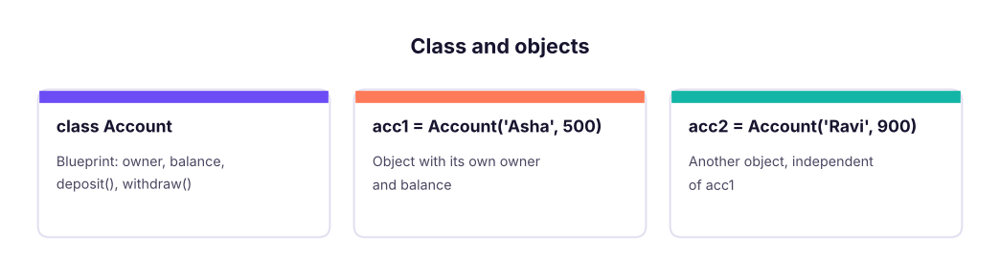
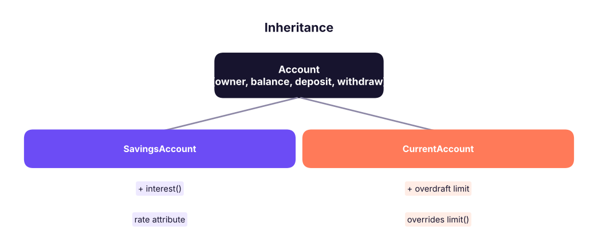

Object-Oriented Python: Classes, Objects, Inheritance and Dataclasses
Model real things as objects. Learn classes, init, attributes and methods, encapsulation, inheritance, polymorphism, special (dunder) methods, class and static methods, properties and dataclasses, with a small data-pipeline example.
- Define classes with attributes and methods and create objects
- Use inheritance, super() and polymorphism to share and customise behaviour
- Implement str, repr, eq and len to make objects behave like built-ins
- Use @property, @classmethod and @staticmethod appropriately
- Choose between a plain class, a dataclass and a dictionary
Why classes?
A class bundles data (attributes) and behaviour (methods) into one unit. An object is one instance of a class. Libraries you already use are classes: a pandas DataFrame has data (rows) and methods (.groupby()).

class Account:
bank = "SkillBank" # class attribute: shared by all objects
def __init__(self, owner, balance=0): # constructor: runs when you create an object
self.owner = owner # instance attributes: belong to this object
self.balance = balance
def deposit(self, amount):
if amount <= 0: raise ValueError("amount must be positive")
self.balance += amount
return self.balance
def withdraw(self, amount):
if amount > self.balance: raise ValueError("insufficient funds")
self.balance -= amount
return self.balance
a, b = Account("Asha", 500), Account("Ravi", 900)
a.deposit(250); b.withdraw(100)
print(a.owner, a.balance, b.owner, b.balance, Account.bank, a.bank)
try: a.withdraw(5000)
except ValueError as e: print("Error:", e)Asha 750 Ravi 800 SkillBank SkillBank Error: insufficient funds
self is the object the method was called on. Python passes it automatically: a.deposit(250) is Account.deposit(a, 250).
Special (dunder) methods
Methods with double underscores customise how objects behave with print, ==, len, + and more.
class Account:
def __init__(self, owner, balance=0): self.owner, self.balance = owner, balance
def __repr__(self): return f"Account({self.owner!r}, {self.balance})" # for developers
def __str__(self): return f"{self.owner}: ₹{self.balance:,}" # for print()
def __eq__(self, other): return (self.owner, self.balance) == (other.owner, other.balance)
def __lt__(self, other): return self.balance < other.balance # enables sorting
def __add__(self, other): return Account(self.owner + "&" + other.owner, self.balance + other.balance)
x, y = Account("Asha", 5000), Account("Ravi", 9000)
print(x, "|", repr(x), "|", x == Account("Asha", 5000), "|", sorted([y, x]), "|", x + y)Asha: ₹5,000 | Account('Asha', 5000) | True | [Account('Asha', 5000), Account('Ravi', 9000)] | Asha&Ravi: ₹14,000| Method | Used by |
|---|---|
__init__ |
Creating the object |
__repr__, __str__ |
repr(), print() |
__eq__, __lt__ |
==, <, sorting |
__len__, __getitem__ |
len(obj), obj[i] |
__iter__, __next__ |
for loops |
__enter__, __exit__ |
with blocks |
__call__ |
Calling the object like a function |
Encapsulation and properties
Python has no strict private members; a leading underscore (_balance) means "internal, please do not touch". A property exposes an attribute while keeping control over it.
class Temperature:
def __init__(self, celsius): self._c = celsius
@property
def celsius(self): return self._c
@celsius.setter
def celsius(self, v):
if v < -273.15: raise ValueError("below absolute zero")
self._c = v
@property
def fahrenheit(self): return self._c * 9 / 5 + 32 # computed, read-only
t = Temperature(25)
t.celsius = 30
print(t.celsius, t.fahrenheit)
try: t.celsius = -500
except ValueError as e: print("Error:", e)30 86.0 Error: below absolute zero
Inheritance and polymorphism
A child class reuses a parent and adds or overrides behaviour. super() calls the parent's version.

class Account:
def __init__(self, owner, balance=0): self.owner, self.balance = owner, balance
def withdraw(self, amount):
if amount > self.limit(): raise ValueError("limit exceeded")
self.balance -= amount
def limit(self): return self.balance
def __str__(self): return f"{type(self).__name__}({self.owner}, {self.balance})"
class Savings(Account):
def __init__(self, owner, balance=0, rate=0.04):
super().__init__(owner, balance) # reuse the parent's setup
self.rate = rate
def interest(self): return round(self.balance * self.rate, 2)
class Current(Account):
def __init__(self, owner, balance=0, overdraft=10000):
super().__init__(owner, balance); self.overdraft = overdraft
def limit(self): return self.balance + self.overdraft # override
accounts = [Savings("Asha", 50000), Current("Ravi", 2000)]
for acc in accounts: # polymorphism: same call, different behaviour
acc.withdraw(5000)
print(acc, "| limit now", acc.limit())
print(accounts[0].interest(), isinstance(accounts[0], Account), issubclass(Current, Account), [c.__name__ for c in Current.__mro__])Savings(Asha, 45000) | limit now 45000 Current(Ravi, -3000) | limit now 7000 1800.0 True True ['Current', 'Account', 'object']
Polymorphism means different classes respond to the same method name in their own way, so code like the loop above works with any account type.
"Is-a" relationships (a Savings is an Account) suit inheritance. "Has-a" relationships (a Pipeline has steps) suit composition: store other objects as attributes. Prefer composition when in doubt.
Class and static methods
class Order:
GST = 0.18
def __init__(self, amount): self.amount = amount
@classmethod
def from_string(cls, text): # alternative constructor: "₹1,200"
return cls(float(text.replace("₹", "").replace(",", "")))
@staticmethod
def is_valid(amount): return amount > 0 # no self/cls: just a function in the class namespace
def total(self): return round(self.amount * (1 + self.GST), 2)
o = Order.from_string("₹1,200")
print(o.amount, o.total(), Order.is_valid(-5))1200.0 1416.0 False
Dataclasses: classes for data
For classes that mainly store data, @dataclass generates __init__, __repr__ and __eq__ for you.
from dataclasses import dataclass, field, asdict
@dataclass(order=True)
class Employee:
name: str
dept: str
salary: float = 0.0
skills: list = field(default_factory=list) # mutable default done safely
def raise_salary(self, pct): self.salary = round(self.salary * (1 + pct / 100), 2)
staff = [Employee("Kavya", "HR", 97000, ["Excel"]), Employee("Rohan", "IT", 120000), Employee("Asha", "HR", 88000)]
staff[0].raise_salary(10)
print(staff[0], "|", staff[0] == Employee("Kavya", "HR", 106700.0, ["Excel"]), "|", max(staff, key=lambda e: e.salary).name)
print(asdict(staff[1]), sorted(staff)[0].name)
import pandas as pd
print(pd.DataFrame([asdict(e) for e in staff]).groupby("dept")["salary"].mean())Employee(name='Kavya', dept='HR', salary=106700.0, skills=['Excel']) | True | Rohan
{'name': 'Rohan', 'dept': 'IT', 'salary': 120000, 'skills': []} Asha
dept
HR 97350.0
IT 120000.0
Name: salary, dtype: float64A small data-pipeline class
import pandas as pd
class CleaningPipeline:
"""Holds a list of cleaning steps and applies them in order."""
def __init__(self): self.steps = []
def add(self, name, func): self.steps.append((name, func)); return self # return self allows chaining
def run(self, df):
for name, func in self.steps:
before = len(df); df = func(df)
print(f" {name:<18} rows {before} -> {len(df)}")
return df
raw = pd.DataFrame({"city": [" Pune", "pune ", "Delhi", None, "Delhi"], "sales": [100, 100, 250, 80, -5]})
pipe = (CleaningPipeline()
.add("drop missing city", lambda d: d.dropna(subset=["city"]))
.add("tidy text", lambda d: d.assign(city=d.city.str.strip().str.title()))
.add("remove negatives", lambda d: d[d.sales >= 0])
.add("drop duplicates", lambda d: d.drop_duplicates()))
print(pipe.run(raw)) drop missing city rows 5 -> 4
tidy text rows 4 -> 4
remove negatives rows 4 -> 3
drop duplicates rows 3 -> 2
city sales
0 Pune 100
2 Delhi 250This is the idea behind scikit-learn pipelines (ML track): objects with fit/transform methods that you chain.
When to use what
| Need | Use |
|---|---|
| A few related values | Tuple / dict |
| Record with named fields, no logic | @dataclass or namedtuple |
| Data plus behaviour, state that changes | Class |
| Share behaviour across related types | Inheritance (or composition) |
| One function | Just a function |
Common mistakes
| Mistake | Fix |
|---|---|
Forgetting self in the method signature |
def method(self, ...) |
Forgetting self. when reading an attribute |
self.balance, not balance |
Mutable class attribute shared by all objects (items = []) |
Create it in __init__ |
| Overusing inheritance | Prefer composition and small functions |
Missing super().__init__() in the child |
Call it to initialise parent state |
Comparing objects without __eq__ |
Compares identity, not content; use a dataclass |
Summary
- A class is a blueprint;
__init__sets up each object;selfrefers to the current object. - Dunder methods (
__str__,__repr__,__eq__,__lt__,__len__) make objects behave like built-ins. - Inheritance reuses and overrides parent behaviour with
super(); polymorphism lets one call work across types. @propertyguards attributes;@classmethodbuilds alternative constructors;@staticmethodgroups helpers.@dataclassremoves boilerplate for data holders. Prefer composition over deep inheritance.
1. What does self refer to?
2. Which method runs when you create an object?
__init__ initialises the new instance.3. What does super().__init__(owner, balance) do in a child class?
4. Which decorator gives a read-only computed attribute?
5. What does @dataclass generate automatically?
6. What is polymorphism?
for acc in accounts: acc.withdraw() works for any account type.(1) Create a Rectangle class with area() and perimeter(), and a Square subclass. (2) Add __str__ and __eq__ to a Point(x, y) class. (3) Build a Stack class (push, pop, peek, __len__). (4) Make a dataclass Product with price and with_gst(), then sort a list of products by price. (5) Write a Counter-like class that counts calls using a class attribute.
Show solution
class Rectangle:
def __init__(self, w, h): self.w, self.h = w, h
def area(self): return self.w * self.h
def perimeter(self): return 2 * (self.w + self.h)
class Square(Rectangle):
def __init__(self, side): super().__init__(side, side)
print(Rectangle(3, 4).area(), Square(5).perimeter())
class Point:
def __init__(self, x, y): self.x, self.y = x, y
def __str__(self): return f"({self.x}, {self.y})"
def __eq__(self, o): return (self.x, self.y) == (o.x, o.y)
print(Point(1, 2), Point(1, 2) == Point(1, 2))
class Stack:
def __init__(self): self._d = []
def push(self, x): self._d.append(x)
def pop(self): return self._d.pop()
def peek(self): return self._d[-1]
def __len__(self): return len(self._d)
st = Stack(); st.push(1); st.push(2); print(st.pop(), len(st))
from dataclasses import dataclass
@dataclass(order=True)
class Product:
price: float
def with_gst(self): return round(self.price * 1.18, 2)
print(sorted([Product(500), Product(120)]), Product(100).with_gst())Q: Class attribute vs instance attribute?
A class attribute is shared by all instances (defined in the class body); an instance attribute belongs to one object (set in __init__).
Q: What is the difference between __str__ and __repr__?
__str__ is the readable form for users (print); __repr__ is the unambiguous form for developers, ideally something that could recreate the object.
Q: Explain the four OOP pillars. Encapsulation (bundle and protect data), inheritance (reuse), polymorphism (same interface, different behaviour), abstraction (expose what, hide how).
Q: Inheritance or composition? Use inheritance for a true is-a relationship; use composition (objects holding other objects) for flexibility and lower coupling.
Practise more online
Free, trusted places to test yourself on this topic. Links open the original site in a new tab.